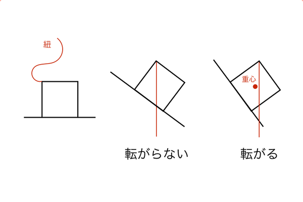
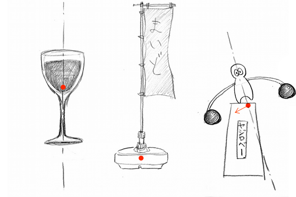
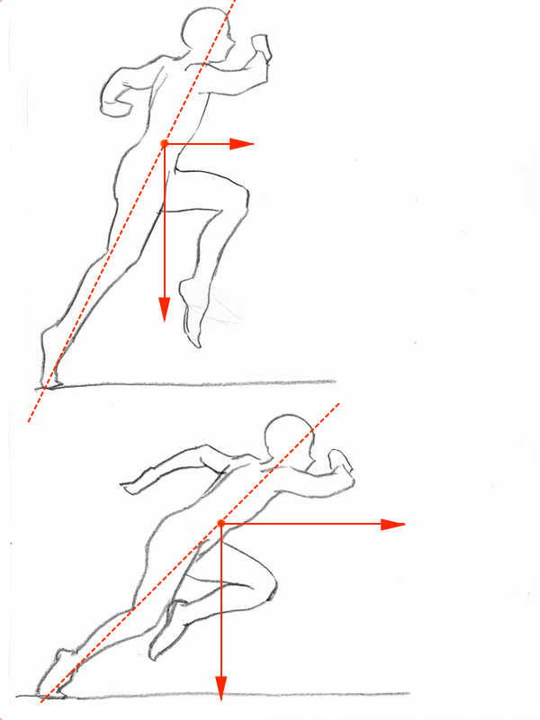

人体デッサンにおいて立ちポーズを安定させるときには重心を意識します。教本やネットで調べても重心という概念は必ず登場します。このように絵描きの間ではよく重心という概念が使われますが、厳密には重心という言葉の使い方が間違っているということに最近疑問をおぼえました。疑問といっても否定的なものではありませんが、もっと理解を深めるために「重心」について考え直してみようというのが今回のテーマです。
絵描きが言う「重心」と、力学的な「重心」の違い
一般に絵描きは「物体の左右の重量のバランスが取れている境界の垂直線」を重心といっていると思います。しかし、力学の分野では「質量分布の中心点」のことを重心といいます。

力学的な重心について説明するには材料力学の分野で使われる考え方が必要です。まずは様々な形状の物体の重心がどこにあるか、数式など使わずに見た目で考えてみてください。立方体なら対角線の交わる中心点、三角形なら少し低めの位置、L型なら物体のシルエットの外側に重心が存在します。
それでは計算で重心を求めてみましょう。と言いたいところですが、数式について論じても絵にはあまり結びつかないので、お絵描きに応用できそうな形で考えてみます。例としてL字の物体の重心を求めていきます。
順に説明すると、まずはL字型を2つの長方形に分割して、その長方形の重心を求めます。次に、2つの長方形の面積を求めます。この面積によって2つの長方形の重さが決まります。その理由を等式で説明すると（立方体の体積）=（底面の面積×高さ）となり、そして（物体の重さ）=（物体の質量×体積）となります。

2つの長方形の重さが求まると、今度はL字型の重心がそれぞれの重心間でどちら側に偏るかを計算します。やり方は、それぞれの重心を直線で結び、（長方形1の重さ：長方形2の重さ）で比率で考えます。そしてその比率の位置にあるのがL字型の重心となります。力学的な重心の求め方は、基本的には単純な形状に分割して考えるものになります。詳しい数式を知りたい方はこちらのサイトで解説されているのでどうぞ。
ちなみに、重心には重力によって垂直方向の負荷がかかります。だから絵描きの言う重心は最終的には間違いではありませんが、重心の位置を垂直線一本で描くことによって高さ方向の座標が無視されています。重心にとって高さ方向の位置は重要な意味を持つので、中心線ではなく中心点として考えた方がいいと思ったのが、この記事を書こうと思ったきっかけです。
重心の高さが重要な理由
重心の高さ方向の位置はどのような意味をもつのか説明します。そのためには、立方体をどれくらい傾けると転がるかという実験を思い出して下さい。実験方法は、まず立方体の上側後方の頂点に紐を垂らし、その立方体を板の上に置いて少しずつ傾けていき、立方体が転がり始めたときの紐の角度を観察する、というものです。
この実験結果は、紐の位置が接地側前方の頂点の位置を超えたときに転がり始めます。立方体は線対称形状なので、左右の重量バランスの境界線が転がる方向に偏ったときに転がります。つまり、物体を支えている接地面の外側に重心がはみ出したときに倒れるということが言えます。

では、非対称形状の台形で同じ実験をするとどうなると思いますか？ 正解は、紐が接地面前方の頂点を超えても転がりません。まだ後ろ側の方が重いからです。そのまま転がるまで傾け続けるといずれ転がり始めます。そして、転がり始める角度が分かれば重心を求めることができます。

先ほどの立方体で実験した場合では、紐が接地面前方の頂点を超えると転がり始めました。そして転がり始める角度では、重心から垂直に発生する負荷が接地面前方の頂点よりも前にはみ出ているということになります。この2つを踏まえると、転がり始める瞬間の接地面前方の頂点からの垂直線上に重心があると考えられます。その垂直線の位置を見てみると、台形のシルエットの下側に偏っています。そして重心が下側に偏っていたこの台形は転倒しにくいという事実があります。これが重心の高さ方向の位置を無視してはいけない理由です。
もしこの台形の接地面が、補強のため金属を貼り付けられていたら、重心は重い方に引っ張られてもっと下の方になります。この状態で同じ実験をすると、転がり始めるまで傾ける角度はさらに大きくなります。重心が低いほど安定するということです。

このように人体デッサンにおける重心を垂直線ではなく中心点で考えることによって、バランスが取れているか否かだけではなく、バランスが取れているポーズの倒れやすさ、倒れにくさを理解することができます。重たい荷物を持っている人物が荷物を上に持ち上げると重心も上に偏り倒れやすくなり、荷物を下げれば重心も下がり倒れにくくなります。

果たして重心を点で考える方法は有効か
個人的にこの考え方は結構重要なことだとおもっています。例えば「バランスが取れている」というのは動きが止まっているポーズです。そして重心が前方に大きく移動すると、キャラクターは前に倒れ始めますが、一歩踏み出して体を支えます。さらに重心が前に・・・と繰り返すと、それは歩きや走りのアクションになります。
こういった動きのあるポーズの場合、重心がずれて常にバランスが崩れている状態を安定と考えます。このとき重心の高さはどう影響するかというと、低いほど走りの力強さが増して、外力（風圧や負荷）による走行の阻害を受けにくくなります。重心が低いとバランスが崩れにくいのは、動きの無いポーズでも有るポーズでも同じです。

というところまで考察しましたが、これ以上はまだ未知の領域です。閃いたときは役立つ考え方かもと思っていましたが、今では難しく考え過ぎではないかとも思っています。実際に絵描きの方からこの考え方では表現の幅が狭まるという指摘もありました。まだ理解できずに腑に落ちていないので、その意味を熟考しながら勉強していこうと思います。